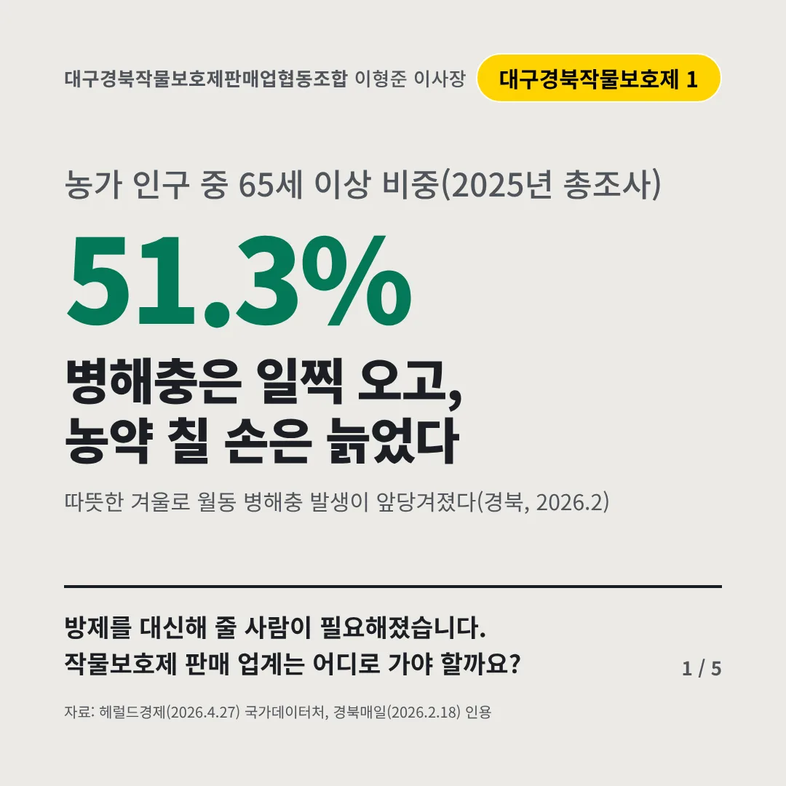
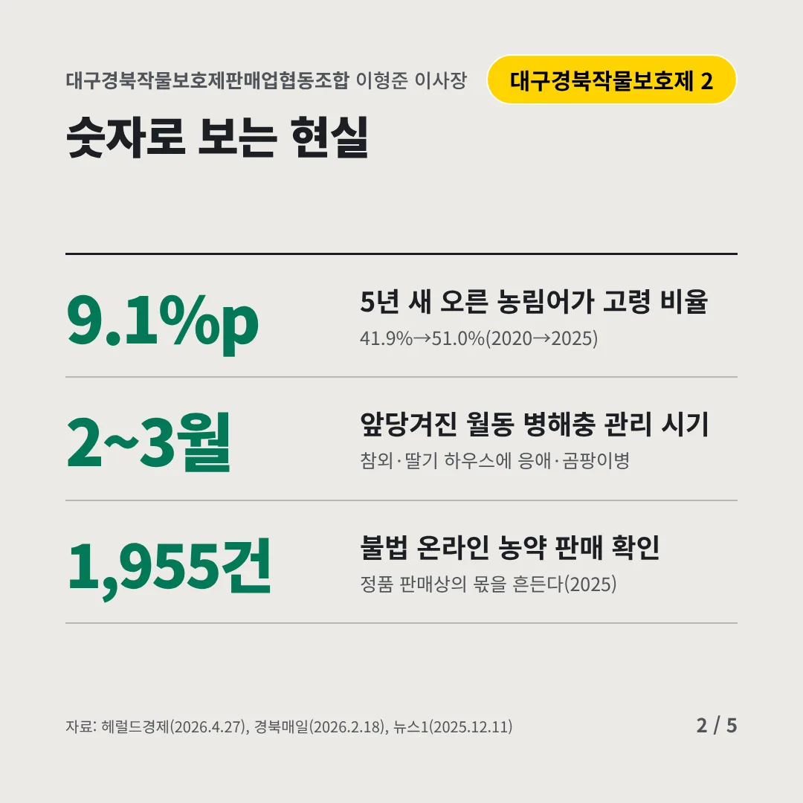
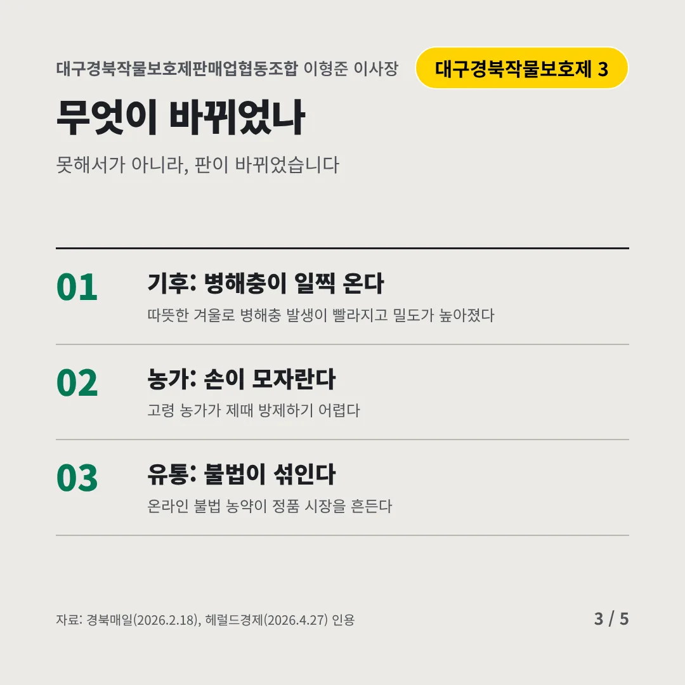
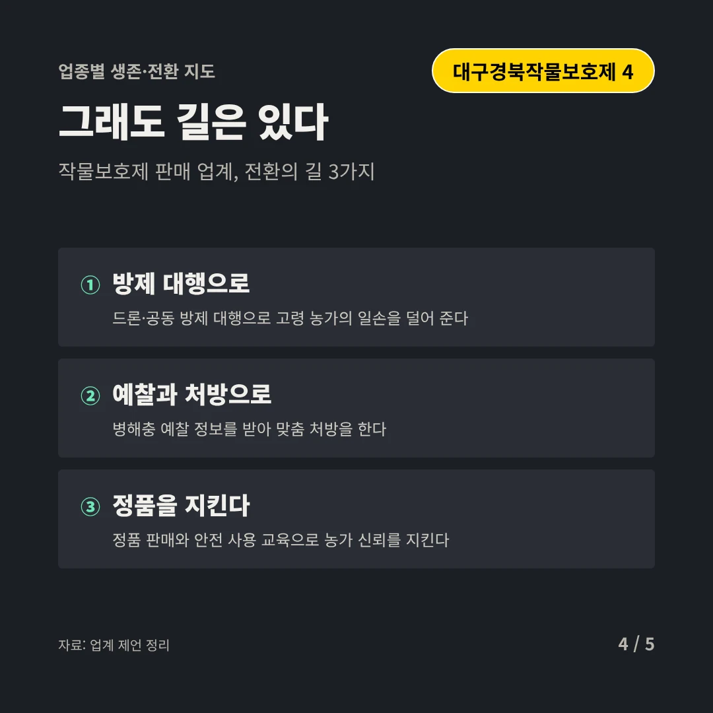
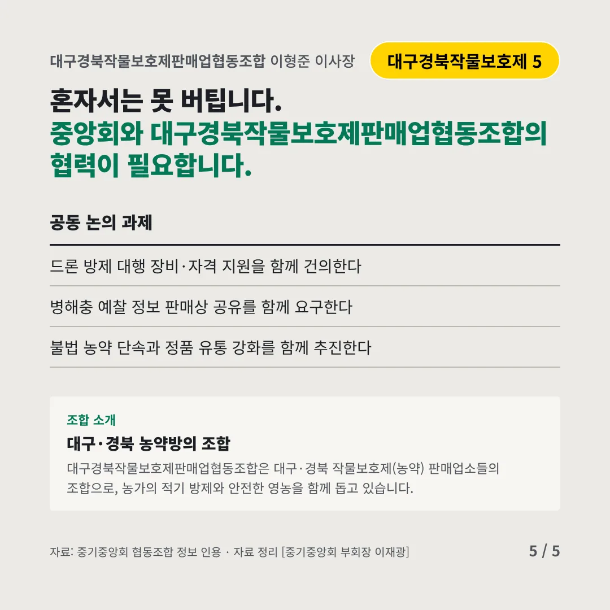
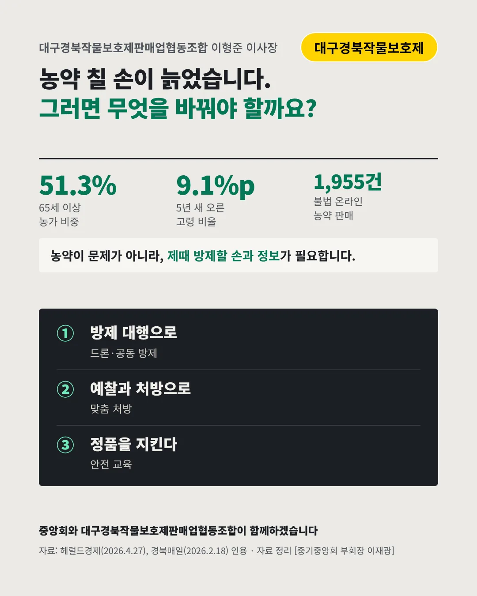

대구경북작물보호제판매업협동조합
병해충은 일찍 오고, 농약 칠 손은 늙었다
51.3% 농가 인구 중 65세 이상 비중(2025년 총조사)






방제를 대신해 줄 사람이 필요해졌습니다. 작물보호제 판매 업계는 어디로 가야 할까요?
숫자로 보는 현실
- 9.1%p5년 새 오른 농림어가 고령 비율41.9%→51.0%(2020→2025)
- 2~3월앞당겨진 월동 병해충 관리 시기참외·딸기 하우스에 응애·곰팡이병
- 1,955건불법 온라인 농약 판매 확인정품 판매상의 몫을 흔든다(2025)
무엇이 바뀌었나
- 기후: 병해충이 일찍 온다따뜻한 겨울로 병해충 발생이 빨라지고 밀도가 높아졌다
- 농가: 손이 모자란다고령 농가가 제때 방제하기 어렵다
- 유통: 불법이 섞인다온라인 불법 농약이 정품 시장을 흔든다
그래도 길은 있다
- 방제 대행으로드론·공동 방제 대행으로 고령 농가의 일손을 덜어 준다
- 예찰과 처방으로병해충 예찰 정보를 받아 맞춤 처방을 한다
- 정품을 지킨다정품 판매와 안전 사용 교육으로 농가 신뢰를 지킨다
한 장 요약

조합 소개
대구경북작물보호제판매업협동조합은 대구·경북 작물보호제(농약) 판매업소들의 조합으로, 농가의 적기 방제와 안전한 영농을 함께 돕고 있습니다.
자료: 헤럴드경제(2026.4.27), 경북매일(2026.2.18), 뉴스1(2025.12.11)